跑步时心率忽高忽低，先检查这3个细节
收藏向｜羽毛球反手总打不到位？看看握拍动作
练深蹲时膝盖不舒服，我调整了这几处
打完篮球第二天酸痛，恢复安排怎么做
番茄炒蛋总出水？试试这个下锅顺序
收藏向｜空气炸锅烤鸡翅，外脆里嫩的关键在哪
为什么你做的意面总是太干？
新手做手冲咖啡，粉水比怎么选
零基础学吉他，第一周先练哪三个和弦
收藏向｜唱歌总跑调，先学会听这两种音程
听懂流行歌的和弦走向，不用先学一堆乐理
给短视频配乐，先确定情绪还是节奏
每天15分钟练听力，我用的是这套流程
收藏向｜英语口语卡壳时，先学会这5句过渡表达
英语时态总混？从生活中的时间线讲起
雅思口语遇到陌生话题，怎么组织回答
同一个问题问三种AI，答案差别在哪
收藏向｜图片生成总不符合预期，先改提示词这部分
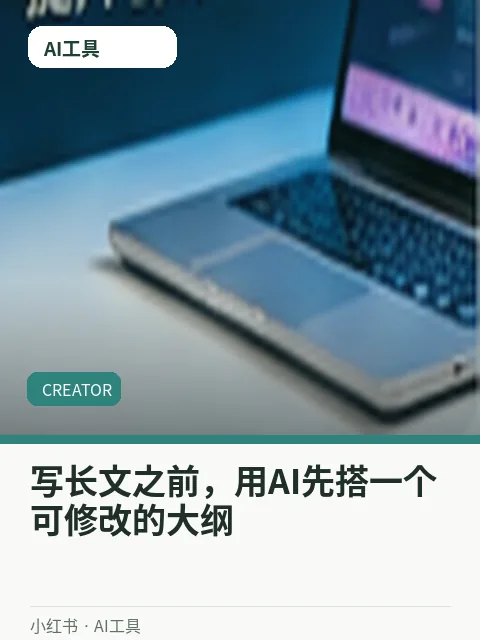
写长文之前，用AI先搭一个可修改的大纲
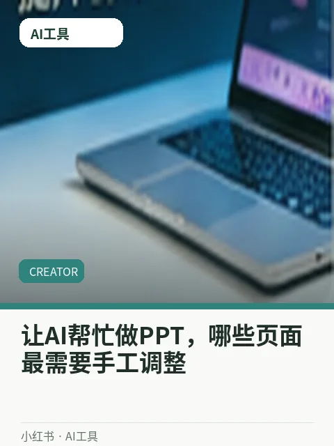
让AI帮忙做PPT，哪些页面最需要手工调整
同一个选题发三种标题，哪个更吸引点击
收藏向｜做系列内容前，先把这张选题地图画出来
小账号如何建立可持续的素材收集习惯
短视频第一句话，到底应该先给结论吗
剪掉这些空镜后，视频节奏突然顺了
收藏向｜字幕为什么看着累？往往是这三个细节
一个转场够不够用？关键是镜头方向
竖屏视频的安全区域到底留多少
每天打开电脑先做什么？我的五分钟清单
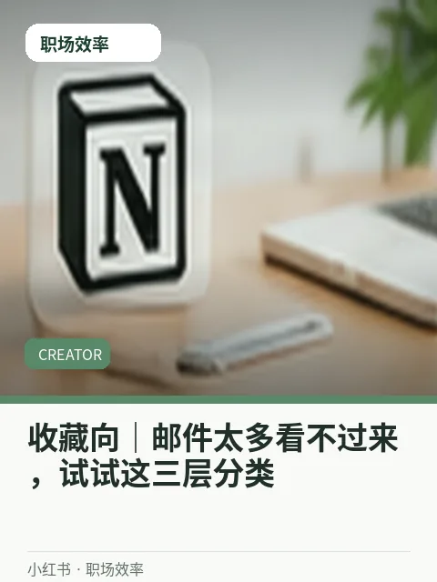
收藏向｜邮件太多看不过来，试试这三层分类
连续开会的一天，如何保留专注时间
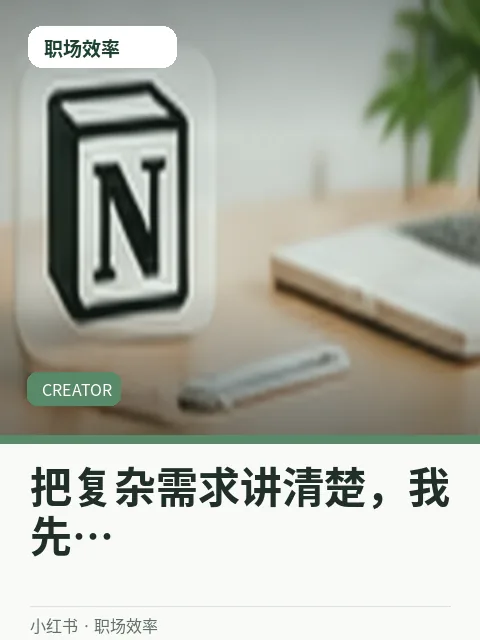
把复杂需求讲清楚，我先写这四个问题
小户型玄关没有柜子，收纳还能怎么做
收藏向｜一周整理一次房间，我会先从这里动手
旅行行李总超重？试试按场景打包
租房卧室太暗，如何用灯光改善氛围
手机拍视频发热严重，可以先排查这些设置
收藏向｜无线耳机延迟明显，哪些使用场景更在意
新手买相机，镜头和机身预算怎么分
外接硬盘老掉线？可能是连接方式的问题
居家练核心，不用器械也能做的4个动作
练深蹲时膝盖不舒服，我调整了这几处｜视频演示
一分钟看懂：新手游泳换气总呛水，可能是节奏没找对
看一场篮球比赛，如何读懂挡拆配合
烘焙新手做戚风蛋糕，最容易忽略的细节
为什么你做的意面总是太干？｜视频演示
一分钟看懂：蒸鱼老有腥味？从处理鱼身开始调整
冬天炖牛肉，怎么判断什么时候入味
我用手机录一段人声，怎样减少房间回声
听懂流行歌的和弦走向，不用先学一堆乐理｜视频演示
一分钟看懂：新手制作电子音乐，先把鼓组排明白
尤克里里自弹自唱，右手节奏怎样保持稳定
看英文视频总依赖字幕？可以这样逐步减少
英语时态总混？从生活中的时间线讲起｜视频演示
一分钟看懂：跟读英语到底跟什么？不只是模仿发音
阅读长难句先抓主干，别急着逐字翻译
AI帮我做周计划，怎样避免排得太满
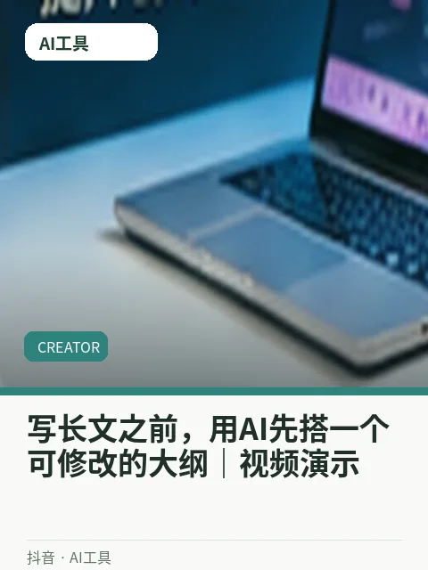
写长文之前，用AI先搭一个可修改的大纲｜视频演示
一分钟看懂：用AI生成视频分镜，镜头衔接要怎么描述
如何给重复工作设计一个简单的AI工作流
视频完播率不理想，别只怪开头不够抓人
小账号如何建立可持续的素材收集习惯｜视频演示
一分钟看懂：直播预告文案怎么写才不会像硬广告
一周只发两条内容，怎样安排制作优先级
手机剪辑vlog，先把声音层级处理好
一个转场够不够用？关键是镜头方向｜视频演示
一分钟看懂：拍了很多素材却剪不动，先做好素材粗分组
怎么用三个镜头讲完整一个小故事
项目进度总说不清？试试用一张看板解释
连续开会的一天，如何保留专注时间｜视频演示
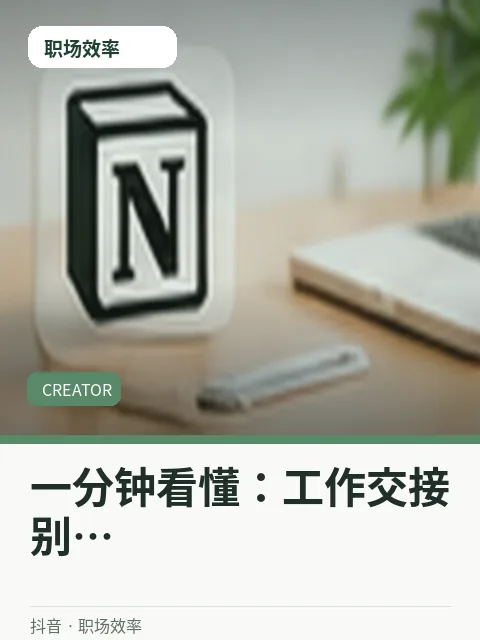
一分钟看懂：工作交接别只发一句看文档
我用便签管理突发任务，避免打断主线工作
普通人的阳台绿植，哪些更容易照顾
旅行行李总超重？试试按场景打包｜视频演示
一分钟看懂：一本小本子，记录每周值得开心的事
把旧衣服重新搭配，真的可以少买几件
路由器放在哪里，家里信号更稳定
新手买相机，镜头和机身预算怎么分｜视频演示
一分钟看懂：智能手表的睡眠数据，能怎么看更合理
家里的旧电脑还能用来做什么
【实操拆解】乒乓球发球老下网？试试调整拍面角度
新手游泳换气总呛水，可能是节奏没找对
网球正手挥拍老发力过猛？先练重心转移
【实操拆解】第一次跑5公里，我是怎么安排配速的
【实操拆解】米饭剩了一碗，第二天做成香喷喷的炒饭
蒸鱼老有腥味？从处理鱼身开始调整
下班后只想做一道菜，这份豆腐饭很合适
【实操拆解】15分钟工作日晚餐：一锅做完两道菜
【实操拆解】一首歌的前奏为什么能瞬间抓住耳朵
新手制作电子音乐，先把鼓组排明白
一分钟认识五线谱，别再被高音谱号难住
【实操拆解】钢琴弹旋律总断断续续？试试慢速分手练
【实操拆解】英文邮件开头别总写Dear Sir
跟读英语到底跟什么？不只是模仿发音
用英文讲完一分钟自我介绍，我怎么准备
【实操拆解】背了单词却不会用？试试给每个词造一句话
【实操拆解】一个表格接上AI后，哪些数据不能直接上传
用AI生成视频分镜，镜头衔接要怎么描述
不懂代码也能整理客服问答？我的测试方法
【实操拆解】用AI整理读书笔记，我保留了人工校对这一步
【实操拆解】评论区里藏着哪些下一期的选题
直播预告文案怎么写才不会像硬广告
为什么收藏很多却没有人关注账号
【实操拆解】内容更新三个月，我用什么指标做复盘
【实操拆解】口播视频的停顿要不要全部剪掉
拍了很多素材却剪不动，先做好素材粗分组
剪辑导出前，我总会做这5项检查
【实操拆解】一分钟讲清楚跳切什么时候用才自然
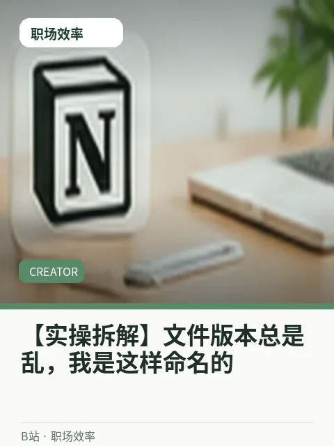
【实操拆解】文件版本总是乱，我是这样命名的
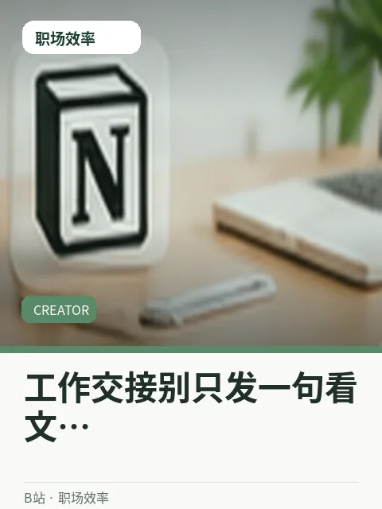
工作交接别只发一句看文档
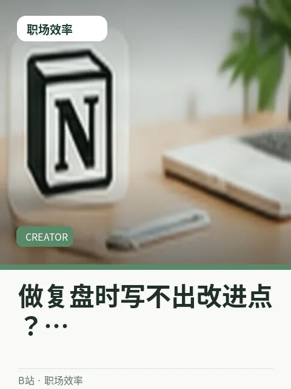
做复盘时写不出改进点？从这三个角度找
【实操拆解】会议一多就忘事，我用一个表格追踪待办
【实操拆解】养猫家庭如何整理容易被打翻的东西
一本小本子，记录每周值得开心的事
阴雨天在家拍生活照，怎样利用窗边的光
【实操拆解】周末不想出远门，我的城市散步路线
【实操拆解】显示器参数很多，办公最值得先看什么
智能手表的睡眠数据，能怎么看更合理
充电器标了很多瓦，为什么充电速度不一样
【实操拆解】轻薄本和游戏本怎么选？先看使用场景
一周运动三次，怎么把跑步和力量搭配起来
网球正手挥拍老发力过猛？先练重心转移｜心得分享
羽毛球反手总打不到位？看看握拍动作
日常分享｜看球时常听到的越位，到底怎么判
一份早餐三种做法，燕麦也能吃出花样
下班后只想做一道菜，这份豆腐饭很合适｜心得分享
空气炸锅烤鸡翅，外脆里嫩的关键在哪
日常分享｜低预算一周备餐，我怎么买菜才不浪费
耳机里听着很满，外放却很浑？
一分钟认识五线谱，别再被高音谱号难住｜心得分享
唱歌总跑调，先学会听这两种音程
日常分享｜鼓点总踩不准？用节拍器试试这个练法
美剧里常见的三个短语，课本里不一定讲
用英文讲完一分钟自我介绍，我怎么准备｜心得分享
英语口语卡壳时，先学会这5句过渡表达
日常分享｜出国旅行常用英语，点餐时先记这几句
AI检索资料很快，但引用来源怎么核验
不懂代码也能整理客服问答？我的测试方法｜心得分享
图片生成总不符合预期，先改提示词这部分
日常分享｜会议录音转文字后，我会再做这两轮检查
做知识类账号，怎样确定自己的内容边界
为什么收藏很多却没有人关注账号｜心得分享
做系列内容前，先把这张选题地图画出来
日常分享｜一条爆款之后，为什么不能把所有标题照搬
人物抠像边缘发虚？先检查原素材
剪辑导出前，我总会做这5项检查｜心得分享
字幕为什么看着累？往往是这三个细节
日常分享｜同一镜头调成暖色和冷色，气氛差别很大
一张表管理每月支出，关键是分类不要太细
做复盘时写不出改进点？从这三个角度找｜心得分享
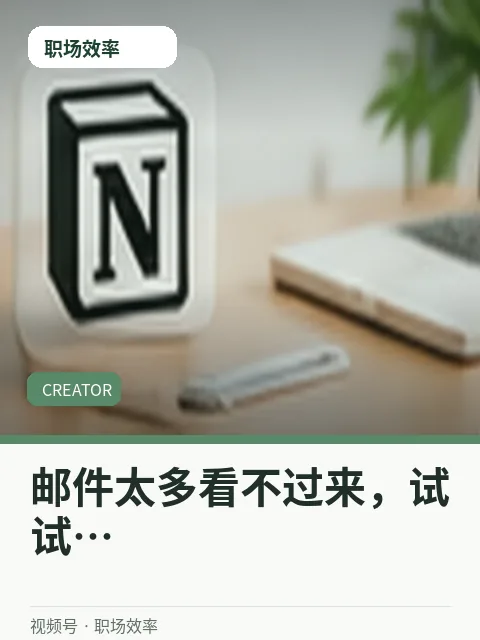
邮件太多看不过来，试试这三层分类
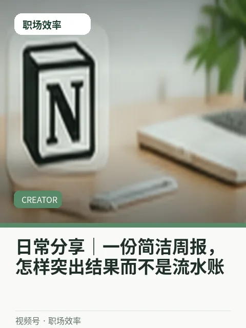
日常分享｜一份简洁周报，怎样突出结果而不是流水账
厨房台面总显乱？我只改了这个动线
阴雨天在家拍生活照，怎样利用窗边的光｜心得分享
一周整理一次房间，我会先从这里动手
日常分享｜早起后不刷手机，半小时还能做什么
录播课声音很闷，麦克风位置怎么调
充电器标了很多瓦，为什么充电速度不一样｜心得分享
无线耳机延迟明显，哪些使用场景更在意
日常分享｜换手机前别急着恢复出厂设置